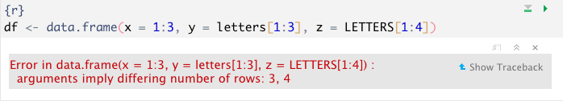
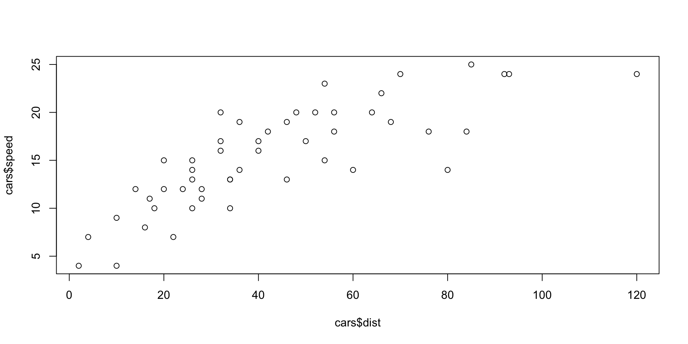
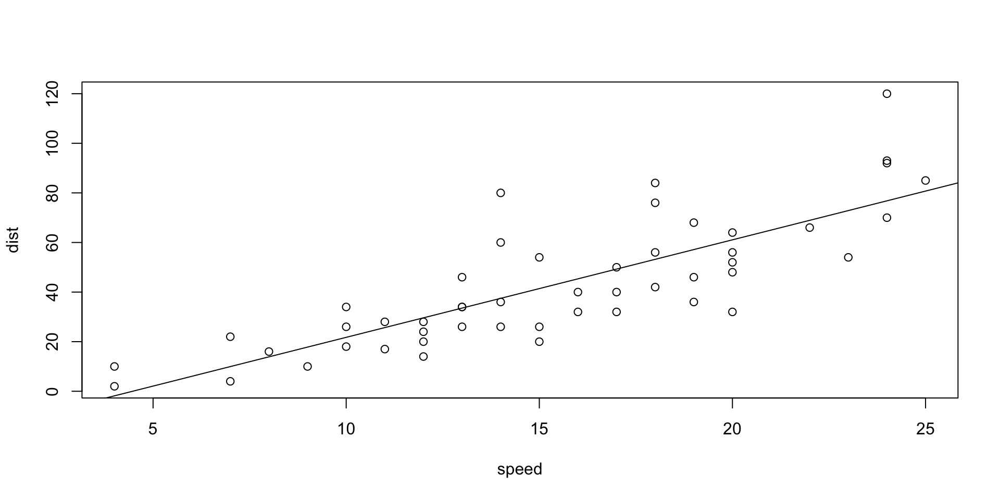

[1] "forcats" "stringr" "dplyr" "purrr" "readr" "tidyr"
[7] "tibble" "ggplot2" "tidyverse" "stats" "graphics" "grDevices"
[13] "utils" "datasets" "methods" "base" "huxtable" "forcats"
[19] "stringr" "dplyr" "purrr" "readr" "tidyr" "tibble"
[25] "ggplot2" "tidyverse" "stats" "graphics" "grDevices" "utils"
[31] "datasets" "methods" "base" Very Short Intro to R
Calculator
Variables
Variables cont.
To both assign and print out result use parentheses.
Variables cont.
We can change an assignment.
Integers, floating point (decimal), numeric
If we want z to be an integer we must do
Vectors
R works on vectors. Even single digits, as above, are vectors of length 1.
What happend?
Vectors cont.
What will z now be?
Vectors cont.
Warning in x + y: longer object length is not a multiple of shorter object
length [1] 8 15 17 30 32 34 36 38 32 34 36 38 27 27 27 27 19 19- If vectors not of same length R will replicate the shortest.
- If a multiple NO WARNING!
- DANGER!
- Else the warning above
Change type
Change type cont.
Picking values in vector
What will happen? Why?
Picking values in vector cont.
Convert back to integer
Picking values in vector cont.
Quite flexible, we can for instance do:
Note that the indexes must be put inside c().
Picking values in vector cont.
What happened previous slide?
Picking values in vector cont.
What will the following return?
Picking values in vector cont.
How to drop last value?
Generating empty vectors
Generating empty vectors
R starts indexing at 1 (not 0).
Code
Time difference of 3.404512 secsGenerating vector incrementally
Slower code. Allocate more space in memory for x for each iteration.
Code
Time difference of 3.737937 secsSpeed Difference
The R way
Time difference of 0.1116111 secs [1] 0.75331105 2.01435467 -0.35513446 2.02816784 -2.21687445 0.75839618
[7] -1.30618526 -0.80251957 -1.79224083 -0.04203245Other types of vectors; logical
Other types of vectors; named
Other types of vectors; factor
Rules for vectors
- Every element of a vector must be of the same type.
- If not, elements will be converted
Rules for vectors cont.
Lists
- Most flexible datatype in R, but also more complex and perhaps more difficult to work with
Lists cont.
- l$x, element x in list l
List in list
- We can have lists inside lists
List in list cont.
List in list cont.
Dataframes
- The most used datastructure in R
- A dataframe is a list of vectors and/or lists of the same length.
The following will not work:
x and y 3 elements, z 4 elements. x, y and z can not be put into a dataframe.
This will work
This will work cont.
- Remember that a dataframe is a list of vectors and lists, hence we can have whole dataframes in a column (variable) in a dataframe.
- Many modern R packages uses this trick including tidyverse and the sf* packages
- They do it a bit more advanced and include a different dataframe in each row
Adding a variable to a dataframe
Adding a variable to a dataframe
Selecting Values from a dataframe
Selecting column 2
Selecting columns 1 and 3
Selecting Values from a dataframe cont.
Selecting column 2 by name
Selecting columns 1 and 3 by name
Selecting Values from a dataframe cont.
Selecting row 1
Selecting Values from a dataframe cont.
Selecting Values from a dataframe cont.
Selecting row 1 and 3 from column 2 and 3
Selecting Values from a dataframe cont.
Selecting value from row 2 and column 3
Be aware of the following
What type?
Be aware of the following cont.
Be aware of the following cont.
Be aware of the following cont.
- If we select a single item from a dataframe we end up with a vector with one element
- If we select multiple values from a row in a dataframe we end up with a vector with multiple arguments
- If we select multiple values from a column in a dataframe we end up a dataframe
- If we select values from multiple rows and columns we end up with a dataframe
Dataframe versus Tibble
Tibble part of tidyverse to be introduced later on, but important point
A Tibble is a modernised version of a dataframe
Dataframe versus Tibble cont.
Note! Selecting from a tibble ALWAYS return a dataframe, selecting from a dataframe will return a dataframe OR a vector.
Matrices
- Rectangular collection of numbers.
- Important in econometrics (appendix D in Wooldridge)
- Used for solving systems of equations
- Special versions of the arithmetic operations for matrices
Matrices cont.
Matrices cont.
Matrices cont.
- Dimension of a matrix is number of rows (m), number of columns (n)
- The rule for matrix multiplication (
X %*% Y) is that it is only defined when \(n_x = m_y\) and the result will be a matrix with dimension \(m_x, n_y\).
Matrices cont.
Matrices cont.
\(X^TX\) is important in econometrics
Finding the inverse of a square matrix
Matrices cont.
Multiplying a matrix with its inverse will give the identity matrix I
Generate identity matrix I
Matrices cont.
Multiplying a square matrix with I will return the matrix
Matrices cont.
We select elements from matrices like we do for dataframes
Subsets
Subsets cont.
Subsets cont.
Subsets cont.
subsetis nice to use with thelm()(linear model, default command to run regressions in R) command to run regressions on a subset of the data
Save/load data
Delete cars_sub
Save/load data
Help
- R has built in help
- For packages to be accepted at CRAN they have to be well documented
tidyversehas very nice documentation- help for a command in Console: help(dim) or ?dim
- Also search in the Help tab
- If we click on the package name in the Package tab we will get documentation for all the commands in the package
- Exercise: Find help for dim {base} via the Package tab
Very simple regression analysis in R
Call:
lm(formula = dist ~ speed, data = cars)
Residuals:
Min 1Q Median 3Q Max
-29.069 -9.525 -2.272 9.215 43.201
Coefficients:
Estimate Std. Error t value Pr(>|t|)
(Intercept) -17.5791 6.7584 -2.601 0.0123 *
speed 3.9324 0.4155 9.464 1.49e-12 ***
---
Signif. codes: 0 '***' 0.001 '**' 0.01 '*' 0.05 '.' 0.1 ' ' 1
Residual standard error: 15.38 on 48 degrees of freedom
Multiple R-squared: 0.6511, Adjusted R-squared: 0.6438
F-statistic: 89.57 on 1 and 48 DF, p-value: 1.49e-12Very simple regression analysis in R
Without intercept term
Call:
lm(formula = dist ~ speed - 1, data = cars)
Residuals:
Min 1Q Median 3Q Max
-26.183 -12.637 -5.455 4.590 50.181
Coefficients:
Estimate Std. Error t value Pr(>|t|)
speed 2.9091 0.1414 20.58 <2e-16 ***
---
Signif. codes: 0 '***' 0.001 '**' 0.01 '*' 0.05 '.' 0.1 ' ' 1
Residual standard error: 16.26 on 49 degrees of freedom
Multiple R-squared: 0.8963, Adjusted R-squared: 0.8942
F-statistic: 423.5 on 1 and 49 DF, p-value: < 2.2e-16Very simple regression analysis in R
Call:
lm(formula = dist ~ speed, data = cars, subset = cars$speed >
6 & cars$speed < 11)
Residuals:
3 4 5 6 7 8 9
-7.500 10.500 0.375 -9.750 -5.875 2.125 10.125
Coefficients:
Estimate Std. Error t value Pr(>|t|)
(Intercept) -17.375 23.397 -0.743 0.491
speed 4.125 2.656 1.553 0.181
Residual standard error: 8.981 on 5 degrees of freedom
Multiple R-squared: 0.3253, Adjusted R-squared: 0.1904
F-statistic: 2.411 on 1 and 5 DF, p-value: 0.1812Reporting Regression Results
Reporting Regression Results cont.
| (1) | (2) | (3) | |
|---|---|---|---|
| (Intercept) | -17.579 * | -17.375 | |
| (-2.601) | (-0.743) | ||
| speed | 3.932 *** | 2.909 *** | 4.125 |
| (9.464) | (20.578) | (1.553) | |
| N | 50 | 50 | 7 |
| R2 | 0.651 | 0.896 | 0.325 |
| logLik | -206.578 | -209.875 | -24.120 |
| AIC | 419.157 | 423.750 | 54.241 |
| *** p < 0.001; ** p < 0.01; * p < 0.05. T statistics in parentheses. | |||
Classic plotting
We will mainly use the ggplot2 package in tidyverse for plotting
Here is a tiny bit about the classic R plot() function

Classic plotting cont.
Classic plotting cont.
Classic plot with regression line
Classic plotting cont.
Code
Call:
lm(formula = sr ~ pop15 + pop75 + dpi + ddpi, data = LifeCycleSavings)
Residuals:
Min 1Q Median 3Q Max
-8.2422 -2.6857 -0.2488 2.4280 9.7509
Coefficients:
Estimate Std. Error t value Pr(>|t|)
(Intercept) 28.5660865 7.3545161 3.884 0.000334 ***
pop15 -0.4611931 0.1446422 -3.189 0.002603 **
pop75 -1.6914977 1.0835989 -1.561 0.125530
dpi -0.0003369 0.0009311 -0.362 0.719173
ddpi 0.4096949 0.1961971 2.088 0.042471 *
---
Signif. codes: 0 '***' 0.001 '**' 0.01 '*' 0.05 '.' 0.1 ' ' 1
Residual standard error: 3.803 on 45 degrees of freedom
Multiple R-squared: 0.3385, Adjusted R-squared: 0.2797
F-statistic: 5.756 on 4 and 45 DF, p-value: 0.0007904Classic plotting cont.
Nicer output than summary()
Classic plotting cont.
| (1) | |
|---|---|
| (Intercept) | 28.566 *** |
| (3.884) | |
| pop15 | -0.461 ** |
| (-3.189) | |
| pop75 | -1.691 |
| (-1.561) | |
| dpi | -0.000 |
| (-0.362) | |
| ddpi | 0.410 * |
| (2.088) | |
| N | 50 |
| R2 | 0.338 |
| logLik | -135.098 |
| AIC | 282.196 |
| *** p < 0.001; ** p < 0.01; * p < 0.05. T statistics in parentheses. | |
Very Simple Function
It’s very easy to write functions in R and we should start to practice at once.
Very simple function cont.
Improved version
Very simple function cont.
Divide two numbers
Very simple function cont.
Simple function with for next loop.
Extensions
Code
# probably from jørn
stupid_fun <- function(
x1 = 0,
n = 10,
d = 1, # how much to increase number
w = 80, # text width in chacters
width_fraction = 1, # how wide should the output be
print_to_console = TRUE # where to send the output
) {
# we stop if we are to produce zero numbers
# stopifnot(n > 0) an alternative but throws an error
# and stop compilation of the document/presentation
if(!n > 0) return("n needs to be positive.")
# max number of digits in numbers
dig = nchar(n*d)
# width in number of charcter for output
w_out = w * width_fraction
# allocate a numeric vector with room for n numbers
x = vector(mode = "numeric", length = n)
# First number in output vector is x1
x[1] = x1
# we loop through x vector but drop first element
for (i in seq_along(x[-1])) {
# i starts at 1, so first is x1 + d
x[i + 1] = x[i] + d
}
# nice trick to control print to console
if (print_to_console) {
print(stringr::str_pad(x, width = dig, side = "left", pad = " "),
width = w_out)
} else {
tibble(x)
}
}Testing
Code
[1] "-13" " -8" " -3" " 2" " 7" " 12" " 17" " 22" " 27" " 32" " 37" " 42"
[13] " 47" " 52" " 57" " 62" " 67" " 72" " 77" " 82" " 87" " 92" " 97" "102"
[25] "107" "112" "117" "122" "127" "132" "137" "142" "147"Print to console FALSE
Zero numbers
Head_and_tail
We have the functions head() and tail() to inspect respectively the start and end of a dataframe or similar object. Sometimes we might want to do bought with one command.
First attempt
Head_and_tail cont.
$mpg
[1] 21.0 21.0 22.8 21.4 18.7 18.1
$cyl
[1] 6 6 4 6 8 6
$disp
[1] 160 160 108 258 360 225
$hp
[1] 110 110 93 110 175 105
$drat
[1] 3.90 3.90 3.85 3.08 3.15 2.76
$wt
[1] 2.620 2.875 2.320 3.215 3.440 3.460
$mpg
[1] 26.0 30.4 15.8 19.7 15.0 21.4
$cyl
[1] 4 4 8 6 8 4
$disp
[1] 120.3 95.1 351.0 145.0 301.0 121.0
$hp
[1] 91 113 264 175 335 109
$drat
[1] 4.43 3.77 4.22 3.62 3.54 4.11
$wt
[1] 2.140 1.513 3.170 2.770 3.570 2.780Head_and_tail cont.
Second attempt
Head_and_tail cont.
Testing
Head_and_tail cont.
Testing
Head_and_tail cont.
Want to learn more classic R?
- Try the Tutorials in upper right pane
- Try the Introduction chapter in Using R for Introductory Econometrics
- See section 2 in Big Book of R
- R for everyone: Advanced Analytics and Graphics, 2nd Edition av Jared P. Lander